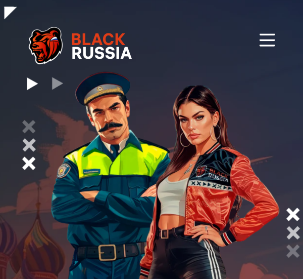

Играть
BLACK
RUSSIA
Ролевая игра, где ты решаешь, кем быть: одиночкой или лидером, героем или теневым боссом. Прокачивайся, собирай команду и строй репутацию. Присоединяйся к миллионам и забери своё.
СМОТРИ БОЛЬШЕ
ЧТО ТЕБЯ ЖДЁТ
В
BLACK
RUSSIA?
Telegram
Сайт
blackrussia.online
хочет выполнить авторизацию с помощью Telegram
Ваши личные данные будут в безопасности
Отмена
Начать